Home / Natural disasters · Projects
When Risk Multipliers Turn Lethal: What East Attica’s Flash Flood Reveals About Hidden Vulnerabilities
NIKOS KAMAKIOTIS · 26 JANUARY 2026 · ORIGINALLY PUBLISHED ON LINKEDIN
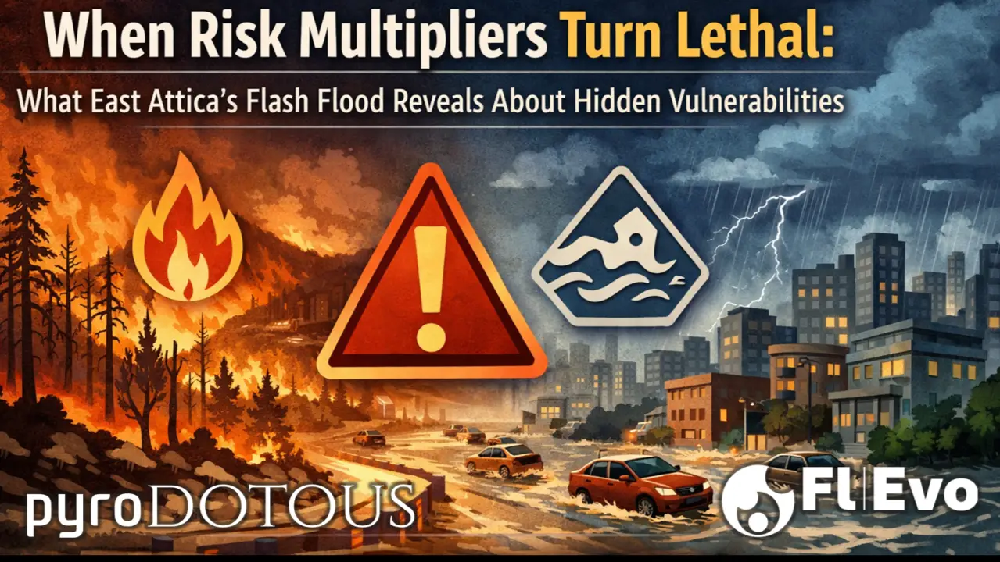
From wildfire legacies to urban blind spots, a fatal incident exposes how generalized risk narratives fail to protect lives
An “Invisible” Threat Comes Into Focus
On 21 January, I saved a post by the United Nations Office for Disaster Risk Reduction (UNDRR) United Nations Office for Disaster Risk Reduction (UNDRR), reposted by Theodore Giannaros, highlighting wildfires as risk multipliers. Among their cascading impacts was one line that stood out: flash flooding after rainfall.
The timing proved tragically precise.
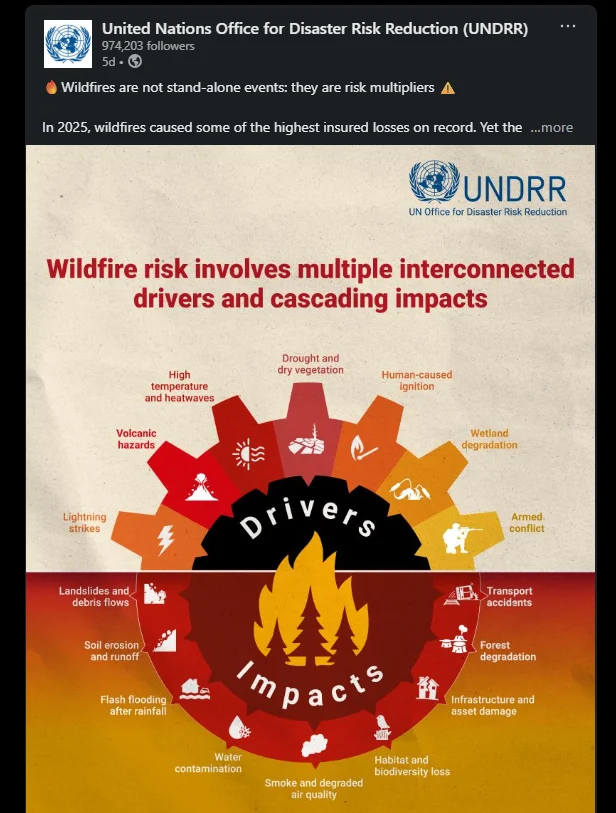
That same day, intense rainfall across Attica triggered flash floods in multiple locations. According to National Observatory of Athens meteorological stations, accumulated rainfall reached up to 144 mm by 19:30. What followed was not an abstract manifestation of “extreme weather,” but a very specific, localized, and lethal process.
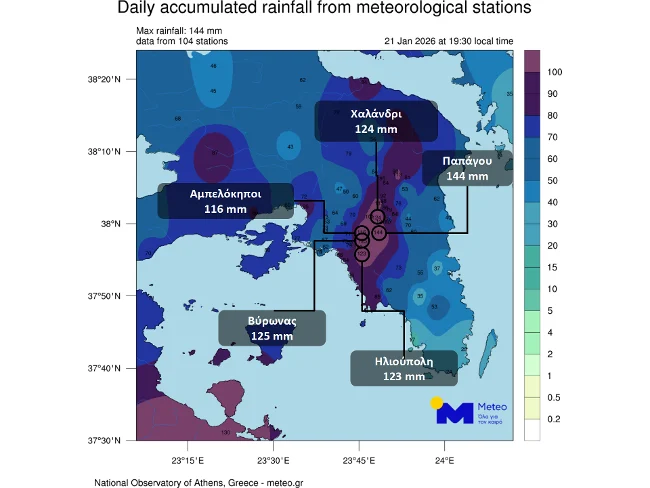
Drowned at 193 m. above sea level...
At approximately 21:00, a 56-year-old teacher was swept away by floodwaters at the eastern outskirts of Ano Glyfada, on the south-west foothills of Mount Hymettus. She had parked her car roughly 150 meters from her home, likely unable to continue driving due to the force of the water, and attempted to walk the remaining distance.
She was dragged by fast-moving floodwaters and trapped beneath a vehicle. Neighbours rushed to assist but were unable to free her due to the velocity of the flow and debris impacts. Emergency services were contacted around 20 minutes after the initial rescue attempt. Her body was recovered later that night.
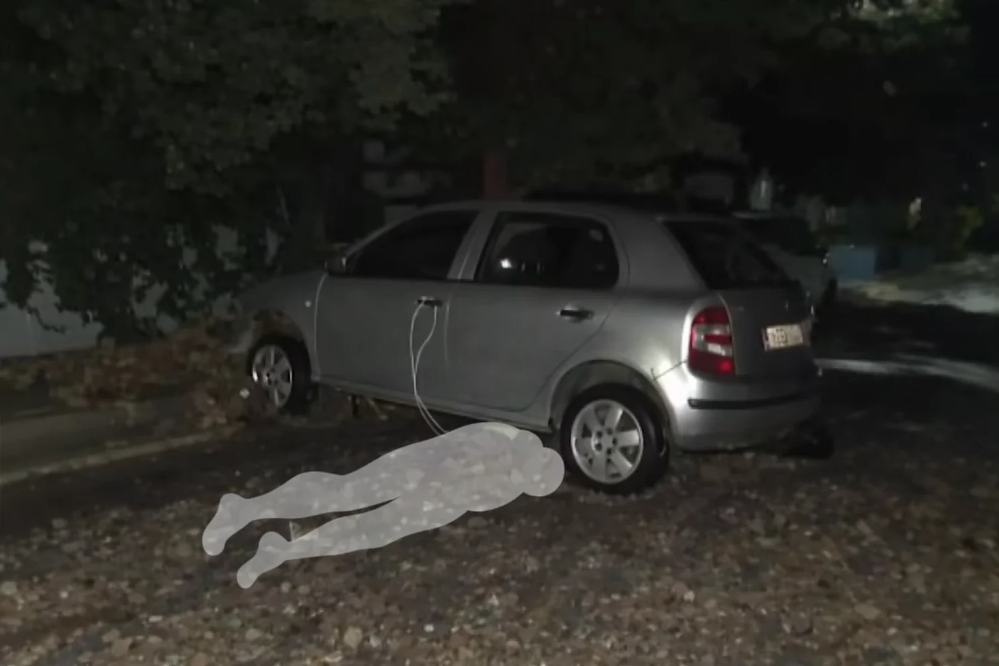
Incident location
The incident occurred at the east outskirts of Ano Glyfada, Attica, at south-west foothills of Mount Hymettus, at 12 Kirillou Methodiou Str.
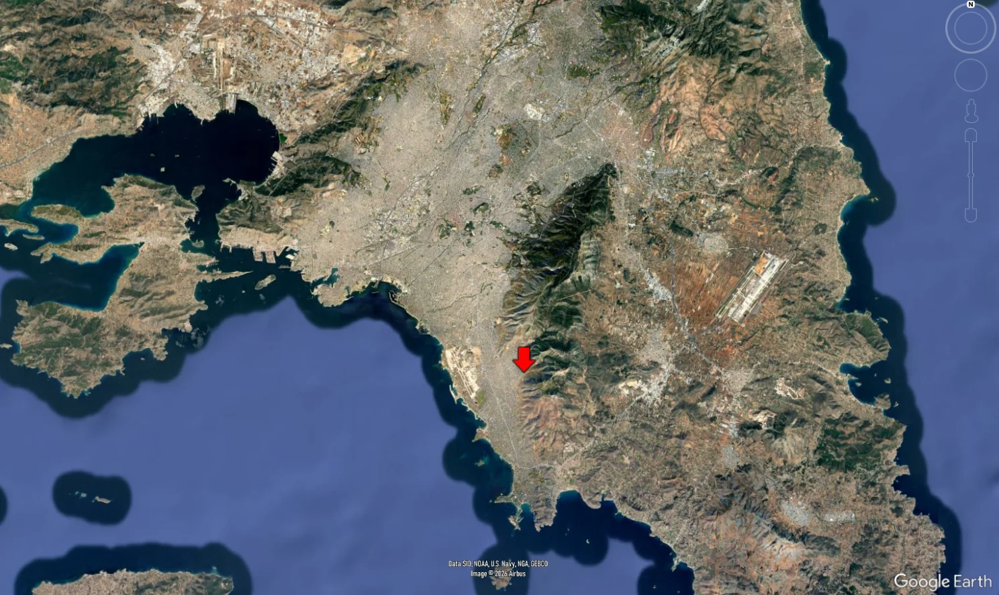
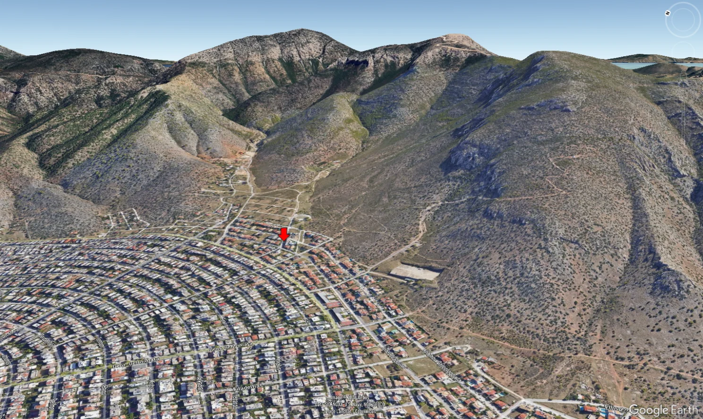
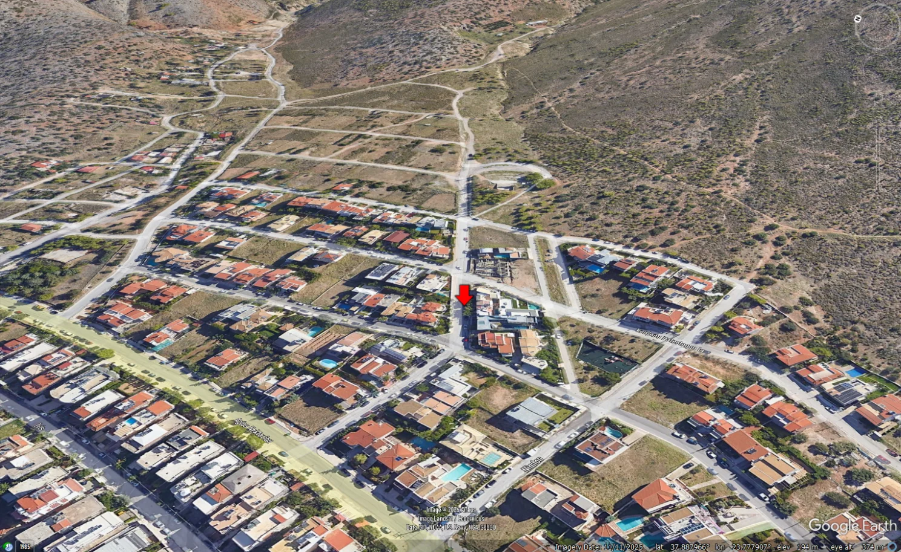
Hydrology: A Buried Stream Still at Work
The catchment area upslope of the incident drains into two streams. The southern one, Varela, historically followed a direct route toward Kirillou Methodiou Street. The estimated catchment area is approximately 3.95 km².
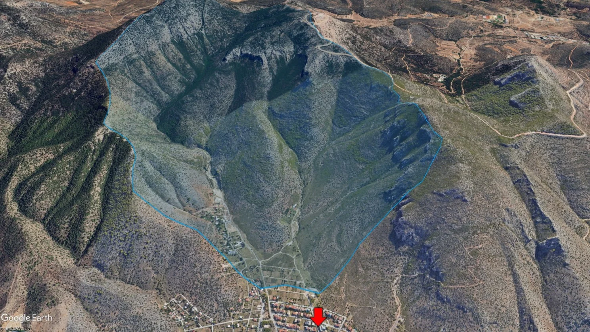
Orthophotography from 1960 (Geographic Service of the Greek Army) clearly shows the original course of the Varela stream. The fatal incident occurred precisely where that stream once flowed.
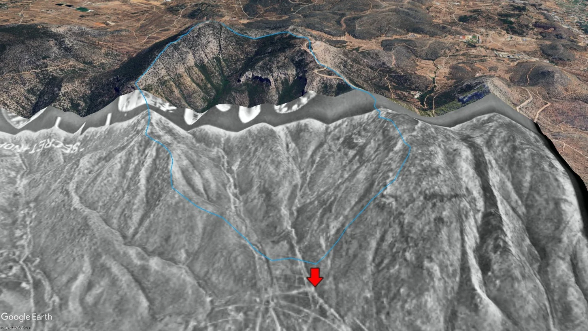
Rainfall intensity
As per aforementioned accumulative rainfall measurements, at the broader area of the incident, this had been from 80 up to 100 mm on 21/01/2026 up to 19:30.
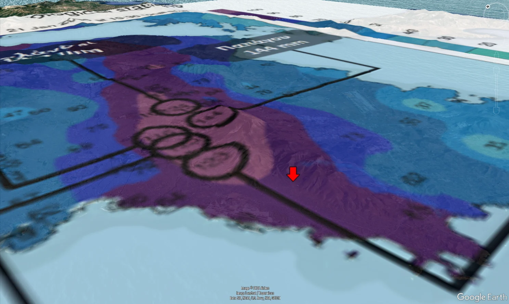
Using a conservative mean accumulated rainfall of 90 mm over the catchment, the estimated runoff volume passing through the Varela and adjacent streams by 19:30 on 21 January was on the order of 355,000 m³. In a steep, urbanised catchment, this translates directly into high-velocity surface flows rather than gradual inundation.
Risk Assessment: Where Generalisation Obscures Reality
The East Attica map of Potentially High Flood Risk Areas was updated in 2024.
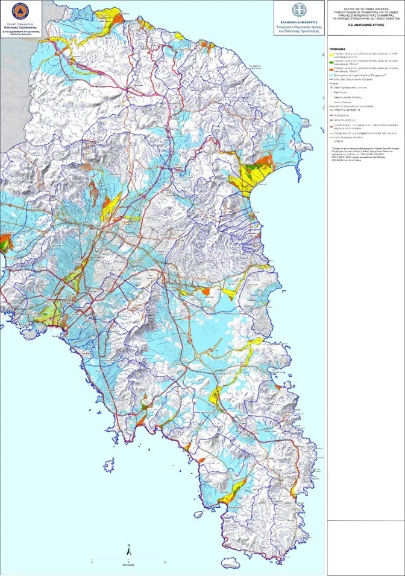
While the historical route of the Varela stream is indicated—despite being fully infilled—the map does not distinguish between flooding and flash flooding mechanisms.
As a result, the incident location appears within a broad flood-risk zone without contextualisation. To a non-expert, this suggests a paradoxical flooding hazard at nearly 200 meters above sea level, on slopes exceeding 13%. More critically, the assessment fails to identify Ano Glyfada as a flash-flood hotspot.
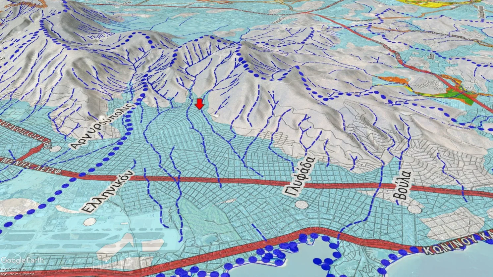
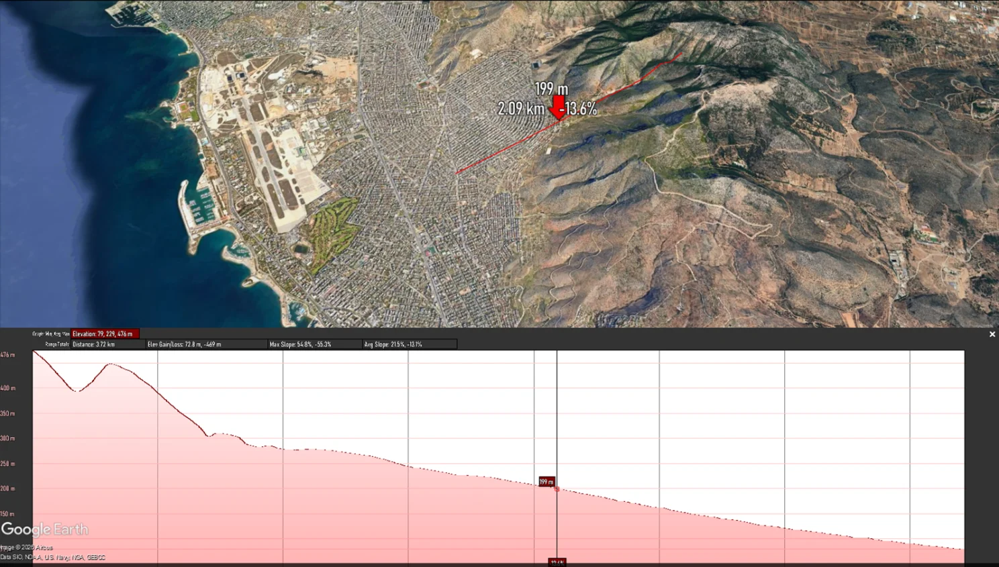
As a result, the incident location appears within a broad flood-risk zone without contextualisation. To a non-expert, this suggests a paradoxical flooding hazard at nearly 200 metres above sea level, on slopes exceeding 13%. More critically, the assessment fails to identify Ano Glyfada as a flash-flood hotspot.
This is a structural weakness of large-scale risk mapping: when spatial resolution and process differentiation are insufficient, the most dangerous locations can disappear into statistical averages.
NOTE: The specific map is not easily accessible since extensive navigation within Ministry of Climate Crisis & Civil Protection's website is required and it is profoundly not designed for reference by non experts.
Short-Term Warnings: Broad Messages, Narrow Usefulness
Ahead of the forecasted severe weather, a teleconference chaired by the Minister of Climate Crisis and Civil Protection took place on 20 January. Public statements focused primarily on heavy snowfall and extreme winds, with no explicit reference to flooding or flash flooding in Attica.
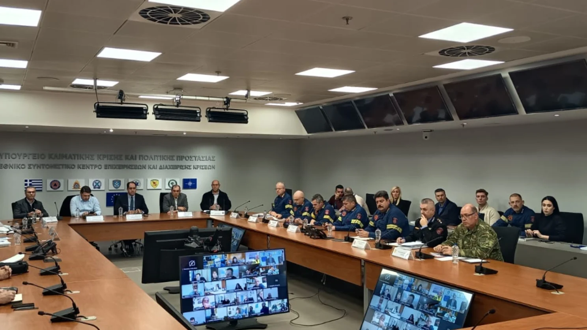
Similar teleconference had taken place after midday (announced at 13:39) on 21/01/2026. Reference to expected heavy rainfall & storms in Attica had been included in the corresponding press bulletin.
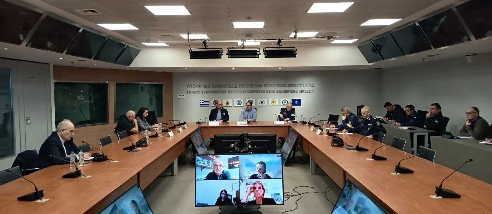
Ad hoc Warning Messages
On 21 January at 10:06, the “112 Greece” system issued a generic warning to approximately five million residents, advising them to limit movements due to “severe weather conditions.” The message was spatially broad, hazard-unspecific, and temporally imprecise—referring to impacts extending into “Wednesday evening,” despite being issued on Wednesday morning.
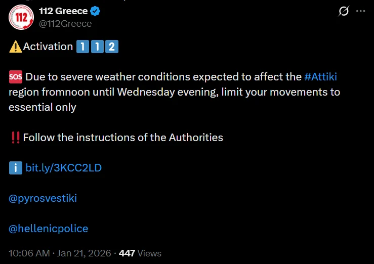
Two additional warnings that day concerned stream overflows in Rafina and Aspropyrgos, locations unrelated to the incident.
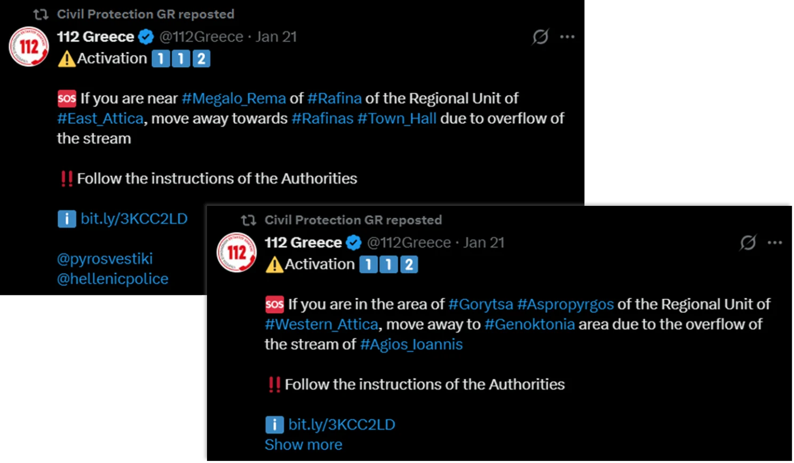
Such generic alerts may serve institutional coverage, but their effectiveness in enabling individual risk-aware decision-making—particularly for fast-onset hazards like flash floods—is highly questionable.
Protection Guidelines
The protection guidelines linked with generic warning message are the general ones provided in Ministry of Climate Crisis & Civil Protection website.
The guidelines related to floods (user needs to briefly navigate in website) are providing the following instructions as for those in vehicles. By considering the actual incident, it is apparent that these are not applicable since they refer to floods and not flash floodings (main threat: floodwaters flow and not high rise of water).
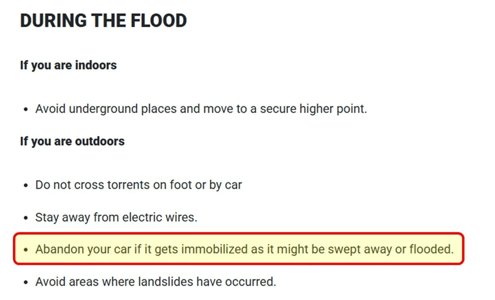
Built Environment
As per aforementioned 1960 orthophotography, the buildings density had been minimal. Huge real estate development (half of Greeks live in the Attica region) occurred leading to full urbanization of a previously rural area picture 1960 It appears that in early 2000s the area over Agiou Nektariou Avenue had been heavily built as per the comparative satellite pictures animation below (2001 - 2025).
The massive development implied the either legal or illegal infillment of natural streams including Varela stream. This had been infilled starting a couple of hundreds of meters northward of incident site. Kirillou Methodiou Str. had been constructed over infilled Varela stream.
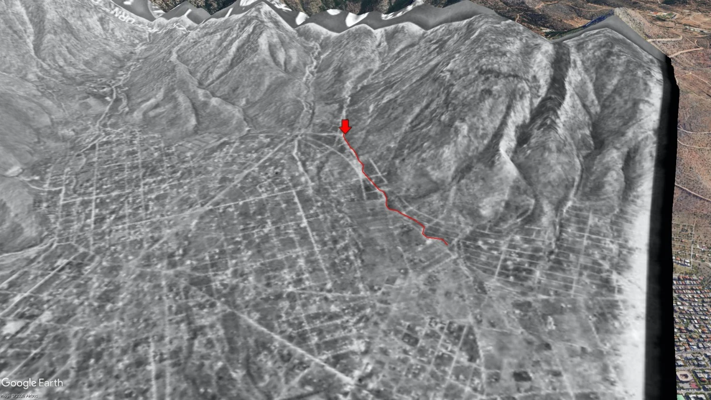
Wildfires and the Missing Link
The catchment area had been completely burnt back in 2009 while wildfires occurred in 2011 and recently in 2022. There are indications that there had been a wildfire within catchment area prior 2001.
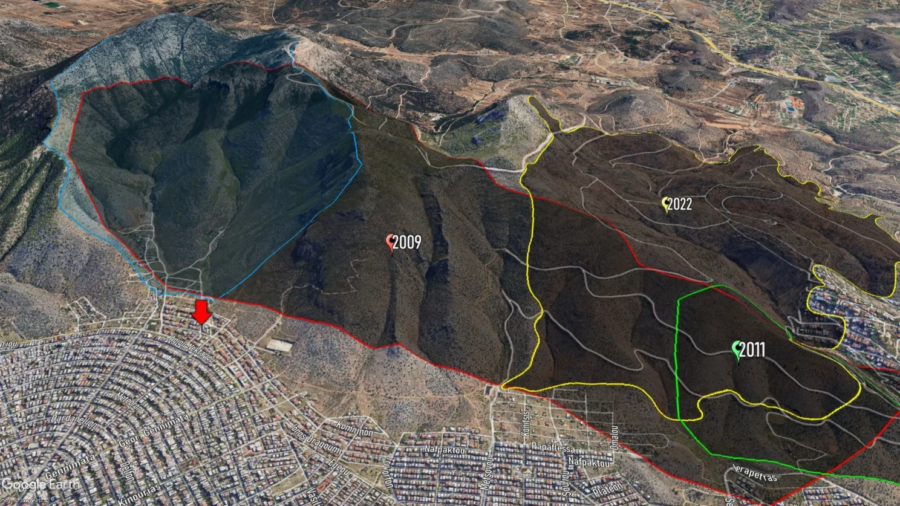
*In a TV debate following 1993 flood incident there is reference to destruction of Hymettus due to a wildfire in 1973 which "launched" the rapid urban development at the broader area (https://youtu.be/Na_mVpZGC8c?si=uEB7964rXD0D4M4I - 00:48:50) .
Post-wildfire flood control works
Based on area's satellite pictures available since 2001, there is no indication of any type of Post-wildfire flood control works within catchment area following 2009 wildfire.
By screening past satellite picture we can only identify artificial reforestation works at a limited part at the south-west side of catchment area in 2000-2001. These works followed, most probably, a wildfire that occurred in late 1990s or early 2000s.
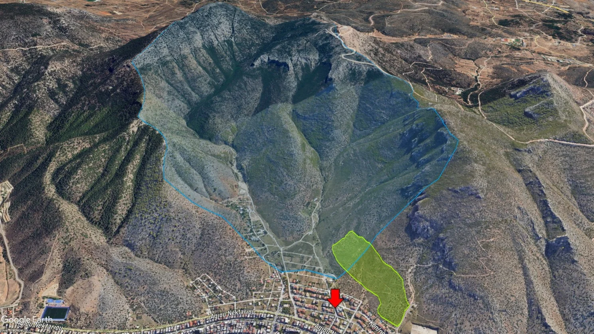
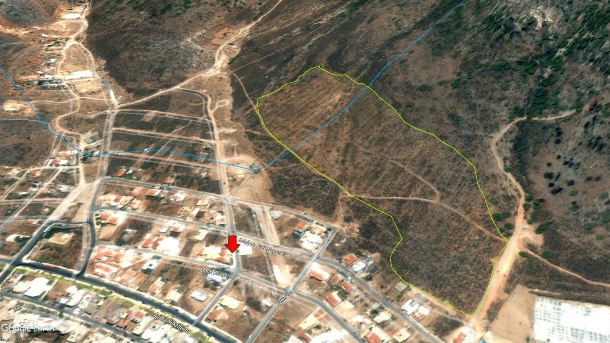
Climate Crisis? - Media aftermath
Following any catastrophe in Greece, either directly or indirectly related to natural environment, conventional and social media are getting "flooded" by statements & comments highlighting either the "unexpected" impacts of "climate crisis" or the long-lasting state or local government failure to provide the required protective infrastructure.
Typical example of this approach are the statements by Mr Giorgos Papanikolaou, Mayor of Glyfada municipality (incident site falls under its jurisdiction).
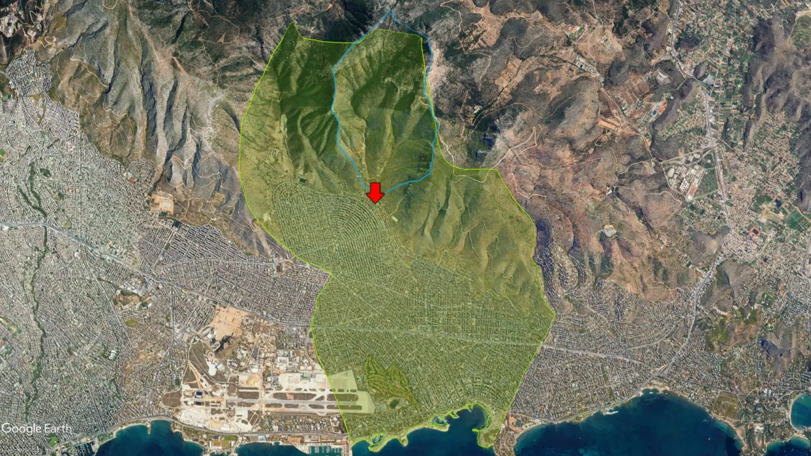
While being hosted by a TV show, he stated that:
- "We faced an unprecedented, as for its intensity & severity, phenomenon..."
- "...we haven't seen anything similar up to now in our town..."
- "under these circumstance, we need to re-evaluate the adequacy of flood protection measures..."
- "we definitely need to identify how can we, higher along Hymettus mountain - upstream of the town, create floodwaters retention with technical means..."
NOTE: Mr Papanikolaou had been initially elected back in 2014 and re-elected in 2019 and 2023, being Glyfada's mayor in the last 11 years .
Unprecedented... Inertia
Trying to "justify" the lack of resilience by deploying the "climate crisis" concept is the last reserve of those who are liable for the failure. Such statements stand in public discussion mainly due to the fact that the majority of people do not follow up what happened in near or distant past.
In 1993 exactly the same municipalities, along the south side of Hymettus mountain, including Glyfada, experienced massive floods with extensive damages to private properties and public infrastructure. 33 years before, nearly identical discussion emerged by those involved (ministers, opposition MPs, local government officials, scientists & journalists).
The mayor of Glyfada municipality at that time, Thodoros Spondylides, shared, while attending a debate panel in a TV talk show, a series of catastrophe's causes including unprecedented weather conditions, streams being infilled, uncontrolled real estate development, lack of drainage system, etc.
The most critical point made 33 years ago by Glyfada's mayor was that irrespective of the scale of the drainage infrastructure to be constructed it would still be impossible to control the floodwaters flow IF there wouldn't be extensive reforestation works on Hymettus mountain. It was clear since then that any intervention within the urban area would be ineffective if this wouldn't be coupled with flow control on the mountain towards which the town is still "crawling".
Even though the head of the municipality had been pointing this decades ago, current mayor committed (after 11 years) on initiating the discussion about this kind of works.
(Water) History made of concrete
While observing the incident site, using Google Earth's Street view, I spotted a peculiar concrete bench just a few meters from the spot where the victim was found. It looks like a bench but it is a little bit higher than usual, it is diagonal to the road central axis fully blocks the sidewalk. I also spotted that on the one side of this it is curved in a way that resembles with structures built on the top of breakwaters.
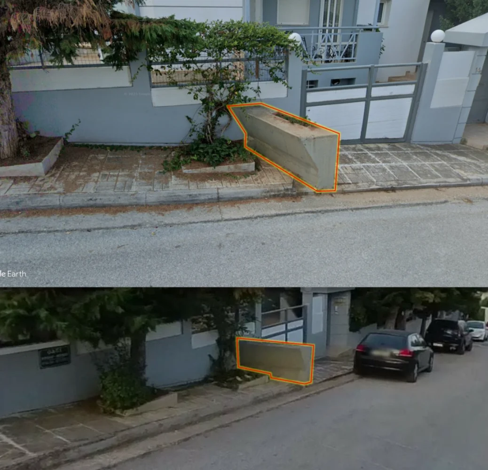
I further searched along Kirillou Methodiou street and the parallel streets and I spotted that there are 4 such structures attached to the perimeter walls of 3 houses only along Kirillou Methodiou street. (2nd at 14, 2 at 12 and 1 at 8).
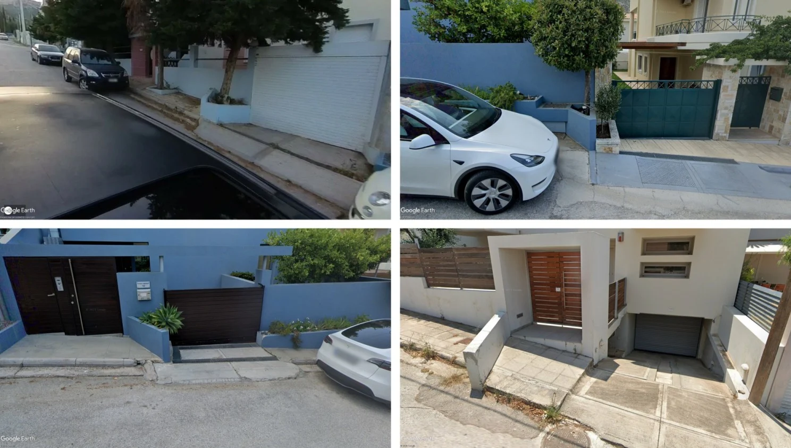
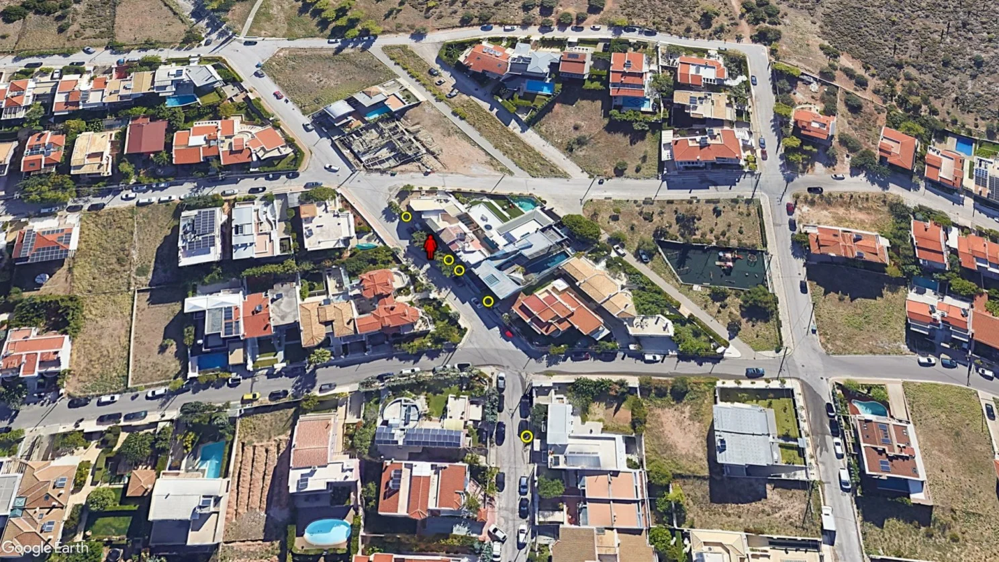
Such structures constitute tangible, built evidence of a locally perceived and repeatedly experienced hazard. Long before this fatal incident, residents had clearly identified the problem and adapted defensively, compensating for the persistent absence of effective institutional risk management. In this sense, the deflectors are not merely concrete objects; they are historical markers of unresolved risk, embedded in the urban fabric.
Key Takeaways: Why Granularity Is Not Optional
This incident was not the product of an unknowable or statistically extreme hazard. It was the outcome of a very specific convergence of factors: post-wildfire hydrological response, steep and confined catchment geometry, buried natural drainage paths, long-term urbanisation over former streams, and the persistent absence of upstream flow-control measures. Each of these elements has been documented, discussed, and—in isolation—acknowledged for decades.
What failed was not awareness in the abstract, but understanding in detail.
Flash flooding is routinely subsumed under the generic category of “flood risk,” despite being governed by fundamentally different mechanisms. Velocity, momentum, debris load, and reaction time—not water depth—define its lethality. When risk assessments, hazard maps, warning messages, and public guidance fail to distinguish these processes explicitly, they become structurally misleading. Areas that appear counter-intuitive—steep streets, elevated neighbourhoods, narrow urban corridors—are precisely where flash-flood risk concentrates.
Large-scale risk mapping and broad classifications may satisfy regulatory or reporting requirements, but they systematically blur local extremes. In doing so, they obscure true hotspots, normalise exposure, and create a false sense of uniformity in risk. The Ano Glyfada case illustrates how a location can be formally classified as “at risk” and yet remain practically invisible in terms of targeted mitigation, preparedness, and warning.
Early warning systems exhibit the same weakness. Generic alerts issued across entire metropolitan regions and referring vaguely to “severe weather” cannot support informed individual decision-making during fast-onset events. For flash floods, minutes—not hours—matter. Effective warnings must be hazard-specific, spatially constrained, and behaviourally explicit. Otherwise, they serve primarily as institutional safeguards rather than tools for public protection.
Finally, the habitual framing of such incidents as manifestations of an “unprecedented climate crisis” diverts attention from long-standing, well-characterised vulnerabilities. Climate change may amplify hazards, but it does not erase historical evidence, local knowledge, or governance responsibility. When every failure is labelled unprecedented, nothing is examined with sufficient depth to be corrected.
Resilience does not emerge from generalisation. It is built through forensic understanding of place: the exact catchment, the exact flow path, the exact land-use decision, and the exact institutional omission. Without this level of detail, serious threats remain hidden in plain sight—until they reappear, violently, as lived experience.